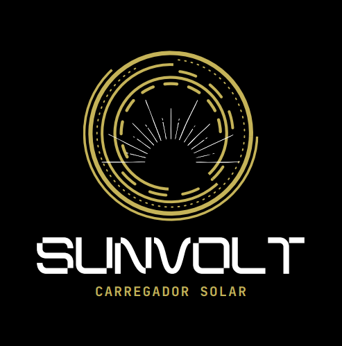

Produto
O Sunvolt é um carregador compacto, leve e sustentável, que utiliza painéis solares para converter a luz do sol em energia elétrica, permitindo carregar dispositivos como smartphones, tablets, câmeras e outros eletrônicos de pequeno porte. Ele oferece uma solução prática para quem busca reduzir a pegada de carbono no dia a dia e deseja uma opção de carregamento fora da rede elétrica.
O Sunvolt contém painéis solares de alta eficiência, bateria interna de lítio que armazena energia para emergências, portas USB e USB-C, design dobrável e portátil, resistência à água e impactos, além de oferecer energia 100% limpa para reduzir o uso de eletricidade convencional.